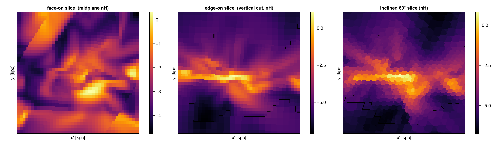
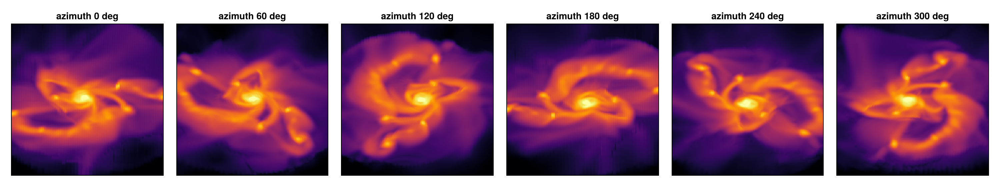
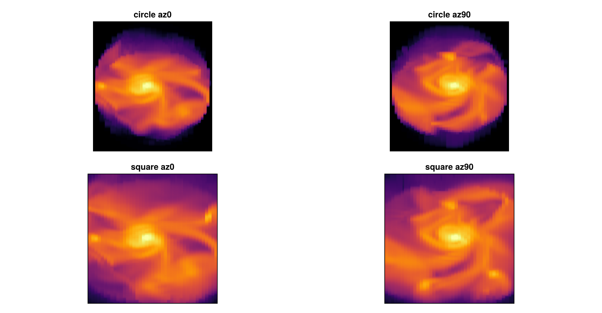

Off-axis: advanced LOS features & mock observations
This tutorial is also an executable Jupyter notebook — open / download 14_multi_OffAxis_Features.ipynb. The notebooks run end-to-end and double as part of Mera's test suite.
This tutorial walks through two off-axis tools built on Mera's projection core: the off-axis slice (cutting plane) and the orbit movie (rotation_sequence).
Run the cells top to bottom and change the numbers. We use one galaxy throughout (spiral_clumps) and set pixel sizes physically with pxsize=[size, :unit].
Prerequisite: the off-axis projection tutorial.
The off-axis column integral, emission+absorption mock image, and FITS export now live in an in-development module (MeraOffAxisSynthObs / MeraFITS, dev/offaxis_synthobs/) that ships separately from the released package. Likewise, line-of-sight PPV cubes, per-pixel spectra, moment maps (moment2/integrated_spectrum), position–velocity diagrams and mock_observe live in a separate in-development module. So this page has no broken examples.
# --- environment ---------------------------------------------------------
using Pkg
Pkg.activate(expanduser("~/Documents/codes/github/Mera.jl")) # adjust to your Mera.jl checkout
using Mera, CairoMakie
CairoMakie.activate!()
println("threads = ", Threads.nthreads()) Activating
threads = 4
project at `~/Documents/codes/github/Mera.jl`BASE = "/Volumes/FASTStorage/Simulations/Mera-Tests" # <-- change me
gas = gethydro(getinfo(100, joinpath(BASE, "spiral_clumps"), verbose=false), verbose=false, show_progress=false); 0.739124 seconds (3.91 M allocations: 303.285 MiB, 1.39% gc time, 100.09% compilation time)A small helper to show a 2D map with physical axes (reused below):
function showmap!(fig, pos, M, ext_kpc; title="", clabel="", cmap=:inferno, logscale=true, crange=nothing, divergent=false)
A = logscale ? log10.(map(v -> v > 0 ? v : NaN, M)) : Float64.(M)
ax = Axis(fig[pos...], aspect=DataAspect(), title=title, xlabel="x' [kpc]", ylabel="y' [kpc]")
xs = range(ext_kpc[1], ext_kpc[2], length=size(A,1)); ys = range(ext_kpc[3], ext_kpc[4], length=size(A,2))
hm = crange===nothing ? heatmap!(ax, xs, ys, A, colormap=cmap, nan_color=:black) :
heatmap!(ax, xs, ys, A, colormap=cmap, nan_color=:black, colorrange=crange)
Colorbar(fig[pos[1], pos[2]+1], hm, label=clabel); hidedecorations!(ax, label=false)
return ax
end;1. Off-axis slice (cutting plane) — slice
slice with any off-axis view keyword (los/inclination/direction=:edgeon/…) gives the field on the camera plane through the centre — a cut, not an integral. Compare the mid-plane density (slice) with the surface density (projection) of the same edge-on view. A slice is a nearest-cell sample (resolution-dependent), so use a projection when you need a conserved quantity.
sl = slice(gas, :rho, :nH; direction=:edgeon, center=[:bc], xrange=[-16,16], yrange=[-16,16],
range_unit=:kpc, pxsize=[0.3,:kpc], verbose=false)
pj = projection(gas, :sd, :Msol_pc2; direction=:edgeon, center=[:bc], xrange=[-16,16], yrange=[-16,16],
range_unit=:kpc, pxsize=[0.3,:kpc], binning=:exact, verbose=false, show_progress=false)
fig = Figure(size=(1050,430)); es = sl.extent .* gas.scale.kpc; ep = pj.extent .* gas.scale.kpc
showmap!(fig, (1,1), sl.map, es; title="slice: n_H on the mid-plane", clabel="log₁₀ n_H [cm⁻³]")
showmap!(fig, (1,3), pj.maps[:sd], ep; title="projection: Σ (column)", clabel="log₁₀ Σ [M⊙/pc²]")
fig
The same plane at three orientations
A slice works for any line of sight. Face-on cuts the mid-plane (you see the spiral/clumpy structure), edge-on cuts vertically (the thin disk as a bright R–z band), and a tilted view cuts obliquely. Pass an xrange/yrange window so the frame fills:
win = (center=[:bc], xrange=[-16,16], yrange=[-16,16], range_unit=:kpc, pxsize=[0.25,:kpc])
sf = slice(gas, :rho, :nH; direction=:faceon, win...)
se = slice(gas, :rho, :nH; direction=:edgeon, win...)
si = slice(gas, :rho, :nH; inclination=60, azimuth=30, axis=:angmom, win...)
fig = Figure(size=(1500,440))
for (k,(s,t)) in enumerate(((sf,"face-on (midplane)"),(se,"edge-on (vertical cut)"),(si,"inclined 60°")))
showmap!(fig, (1,2k-1), s.map, s.extent .* gas.scale.kpc; title="$t nH", clabel="log₁₀ n_H [cm⁻³]")
end
fig
The tilted, non-square cells in the inclined panel are not an artefact: a slice draws each cell as the intersection of the camera plane with the cube, which is a square only face-on and a polygon (parallelogram/hexagon, elongated along the tilt) at an angle. They are largest for the coarse low-density cells and shrink with refinement.
Empty (black) pixels are expected geometry: without a window the auto-fit frame's corners (the plane∩box polygon) have no cell, and the few specks in the thin edge-on cut are the inherent sub-percent nearest-cell gaps at AMR refinement boundaries. For a gap-free, conserved map use projection.
2. Orbit movie — rotation_sequence
rotation_sequence renders the same field from a sweep of viewing angles, all sharing one field of view so the frames don't jitter (a plain per-angle projection would recompute the extent each frame). It returns a vector of map objects, ready to montage or animate:
frames = rotation_sequence(gas, :sd, :Msol_pc2; sweep=:azimuth, angles=0:30:330,
inclination=55, axis=:angmom, pxsize=[0.35,:kpc],
aperture=:square) # fov omitted → auto-fit the whole galaxy; full square frame
fig = Figure(); ax = Axis(fig[1,1], aspect=DataAspect()); hidedecorations!(ax)
record(fig, "orbit.mp4", eachindex(frames); framerate=12, compression=18) do k # .mp4 (or "orbit.gif")
empty!(ax); heatmap!(ax, log10.(frames[k].maps[:sd]); colormap=:inferno)
endrecord picks the format from the file extension: "orbit.mp4" writes an H.264 video (much smaller and higher quality — a finer sweep like angles=0:10:350 stays a few hundred kB where the GIF is several MB), "orbit.gif" an animated GIF. For mp4, compression (0–51, lower = better/larger) tunes quality; framerate sets playback speed. Both need no extra packages — CairoMakie ships the encoder.

Orbit movie (mp4) — azimuth sweep at 55° inclination. The same loop with "orbit.gif" gives the GIF version.
{kind=link}
Each frame is a projection at that viewing angle. The off-axis camera is orthographic, so the only control over what is in frame is fov (omit it to auto-fit the galaxy — the mass-enclosed 99% radius — or set fov=… to zoom in), and the FOV is made rotation-invariant by selecting a sphere about center — so the galaxy keeps the same scale at every angle (no zoom). aperture=:circle (default) shows that sphere as a circular aperture (empty corners); aperture=:square (used above) selects a √2·fov sphere and crops to the ±fov square for a full rectangular frame with no empty corners. sweep can also be :inclination (face-on → edge-on) or :position_angle (camera roll).

Takeaway
slice(with off-axis view keywords) — the field on a cutting plane (vs the conserved projection), at any orientation.rotation_sequence— a shared-FOV angle sweep for jitter-free orbit movies.
The off-axis column integral, emission+absorption mock image, and FITS export now live in the in-development MeraOffAxisSynthObs / MeraFITS modules (dev/offaxis_synthobs/), which ship separately from the released Mera package.